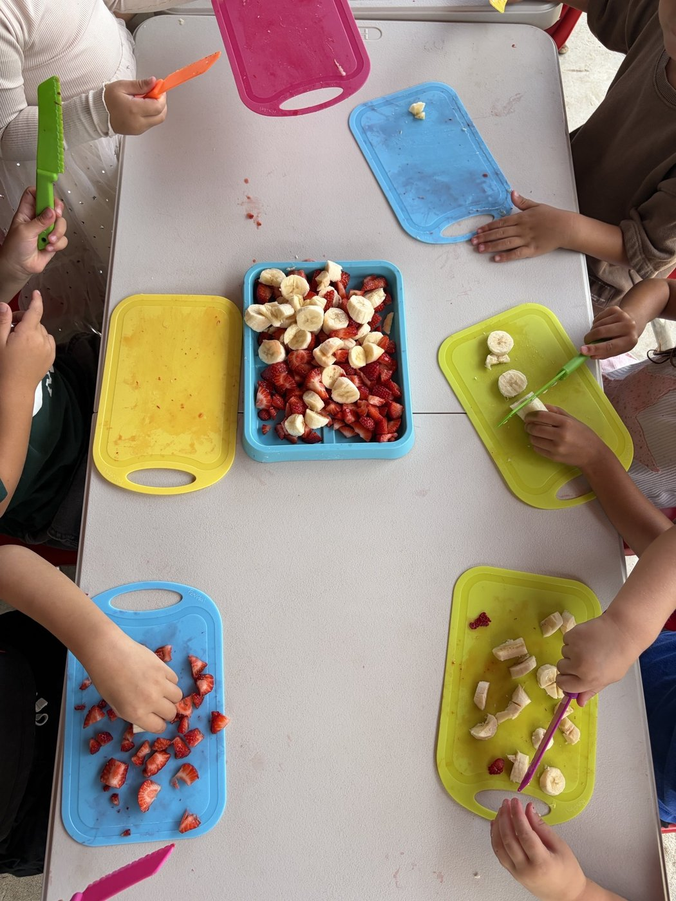
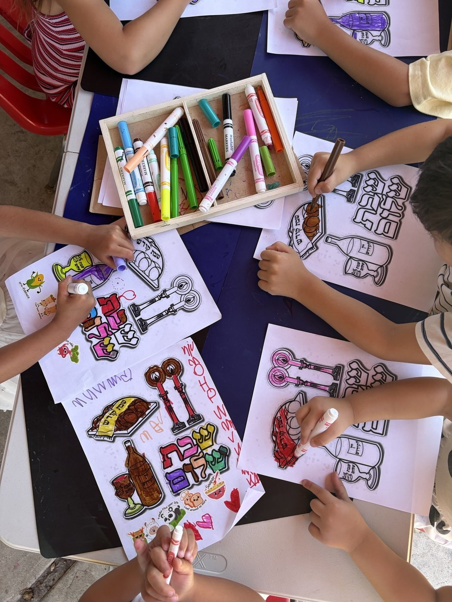
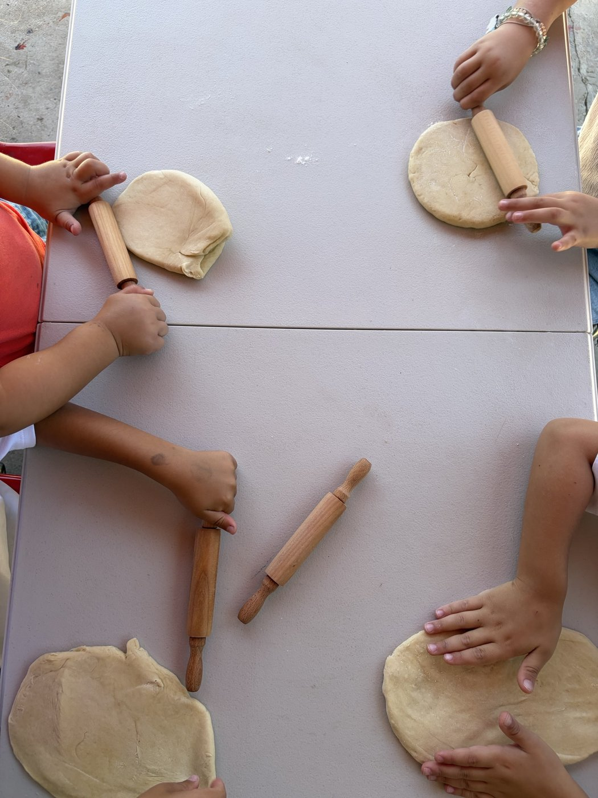

Our Programs
Quality care tailored to each child's developmental stage
At Revital Daycare, we recognize that each age group has unique developmental needs. Our programs are designed by early childhood professionals to foster growth, learning, and joy at every stage.
Infant Care Program
Ages: 6 weeks - 12 months
Our infant care program provides a warm, responsive environment where babies build secure attachments with nurturing caregivers. We follow each child's individual schedule for feeding, sleeping, and play, and partner closely with parents to ensure consistency between home and daycare. Low ratios mean your baby gets the one-on-one attention they need to thrive.
What We Offer:
- Personalized Care: Low child-to-staff ratio for one-on-one attention and bonding
- Development Tracking: Regular assessments of milestones and individual growth plans
- Flexible Feeding: Accommodates your baby's schedule and feeding preferences
- Sensory Activities: Age-appropriate sensory play and exploration
- Parent Communication: Daily updates and regular parent check-ins
- Safe Sleep Practices: Following current SIDS prevention guidelines
Daily Routine Includes:
- Feeding and diaper changes on individual schedules
- Tummy time and motor skill development
- Music and gentle movement activities
- Outdoor time in a safe, secure area
- Quiet rest periods and nap time

Toddler Program
Ages: 1 - 2 years
Our toddler program channels natural curiosity and energy into structured exploration. We emphasize language development through songs, stories, and conversation, while guiding toddlers toward independence with self-feeding, dressing, and toilet learning readiness. Social-emotional growth is nurtured through cooperative play, sharing, and gentle guidance with big feelings.
What We Offer:
- Language Development: Songs, stories, and conversation to build vocabulary
- Social Skills: Learning to interact with peers and manage emotions
- Fine Motor Activities: Painting, play-dough, puzzles, and exploration
- Gross Motor Play: Running, climbing, dancing, and outdoor exploration
- Independence: Encouragement in self-feeding, dressing, and toilet learning readiness
- Creative Play: Music, art projects, and dramatic play opportunities
Daily Routine Includes:
- Circle time with songs and finger plays
- Hands-on learning centers and exploration
- Outdoor play and nature exploration
- Snack time and meal preparation involvement
- Quiet time and rest periods
- Story time and language activities

Preschool Program
Ages: 3 - 5 years
Our preschool program prepares children for kindergarten and beyond with a balanced focus on academic foundations and social-emotional readiness. We introduce literacy, math, science, and creative arts through structured lessons and hands-on exploration. Children build confidence, self-regulation, and classroom skills that ensure a smooth transition to elementary school.
What We Offer:
- Pre-K Curriculum: Developmentally appropriate academic foundations
- School Readiness: Social skills, self-regulation, and classroom behavior
- Literacy Skills: Letter recognition, phonics, and early reading
- Math Concepts: Counting, patterns, shapes, and early problem-solving
- Science Exploration: Nature studies, experiments, and discovery
- Creative Arts: Art projects, music, drama, and self-expression
Daily Routine Includes:
- Morning meeting and planning circle
- Structured learning activities and teacher-led lessons
- Centers-based learning and exploration
- Library and reading time
- Outdoor play and physical education
- Snack preparation and lunch time
- Art, music, and special activities

Our Learning Philosophy
We follow a play-based, child-centered approach inspired by Reggio Emilia principles. Our teachers act as guides, creating inviting learning environments where children drive their own discovery through hands-on activities, open-ended materials, and meaningful interactions. We believe every child is capable, curious, and full of potential.
Play-Based Learning
We believe children learn best through play. Our activities encourage exploration, creativity, and natural curiosity.
Individualized Attention
Each child develops at their own pace. We celebrate individual strengths and support growth in all areas.
Whole Child Development
We support cognitive, social-emotional, physical, and creative growth through integrated learning experiences.
Community & Culture
We celebrate diversity and teach children to respect and appreciate differences in our community.
Enrollment & Pricing
We offer full-time and part-time enrollment with flexible scheduling options to meet your family's needs.
How to Enroll
We welcome new families throughout the year. The enrollment process begins with a personal tour of our facility so you can meet our staff and see our classrooms in action. After the tour, you can submit an application with a $50 registration fee to secure your child's spot. We maintain a waitlist for popular age groups and recommend applying early.
- Schedule a tour and meet our staff
- Complete application and enrollment forms
- Finalize enrollment and start date
Pricing & Discounts
Infant care (6 weeks-12 months): $1,800/month full-time. Toddler program (1-2 years): $1,500/month full-time. Preschool (3-5 years): $1,300/month full-time. Part-time options available at reduced rates. We offer a 10% sibling discount for families enrolling more than one child.
Contact us for current rates and enrollment availability.
Ready to Get Started?
Schedule a tour to see our facility and learn more about our programs.
Schedule a TourQuestions? We'd Love to Hear From You
Contact us anytime to discuss our programs and answer any questions.
Get in Touch